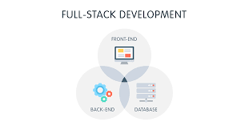
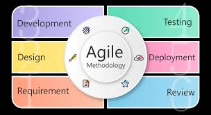

Favourite Subjects
4IR Technologies Bootcamp

One of my favourite subjects, and the very first subject I was introduced on the first days of the Accenture 4IR WRP. From decision tree to ANN this subject was very fun and mind-blowing
Full stack web development for 4IR
The second subject we are currently busy with. This subject is intense but, it is turning to be my favourite subject, mainly due to the amount of skills I am learning.
Agile Rapid Skills Acquisition
We have not really done much on this subject but, what we have done so far is pretty epic. From using the Kanban board to doing a retrospective session, this subject is also one of my favourites so far.